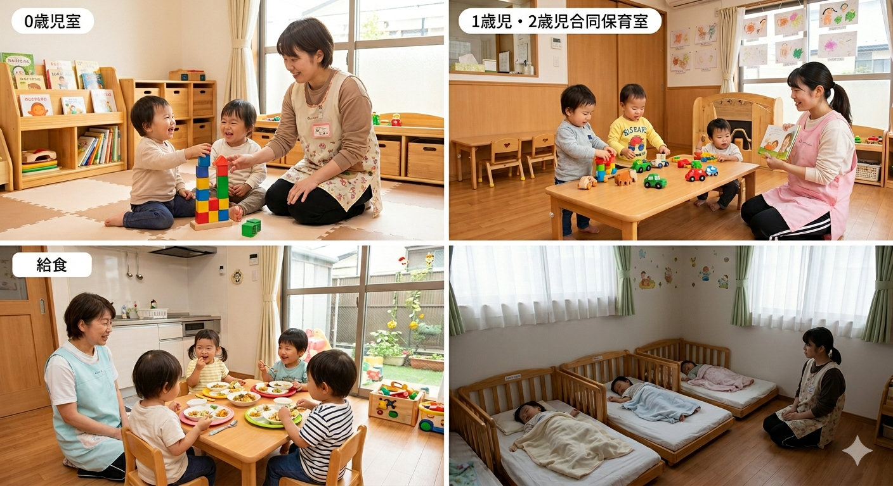
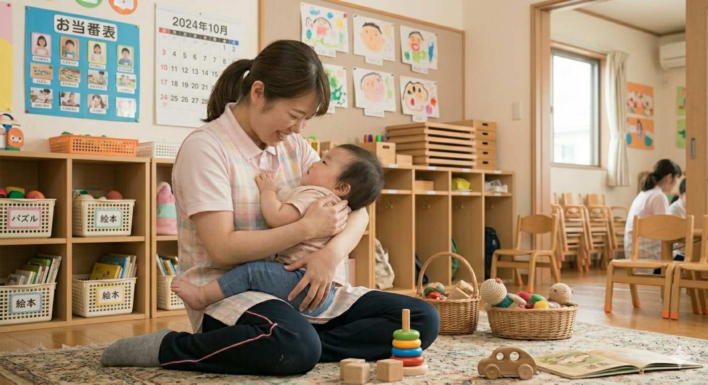

当園について
はじめての保育園でも、安心して過ごせるように。一人ひとりの気持ちに寄り添いながら、やさしく見守る保育を大切にしています。
少人数保育
一人ひとりに、しっかり目が届く環境。
少人数だからこそ、子ども一人ひとりの様子を 丁寧に見守ることができます。

手厚いサポート
はじめての保育園でも安心できる、丁寧な関わり
0〜2歳の時期は、生活リズムや体調が日々変化します。 当園では、ミルク・離乳食・お昼寝などを 一人ひとりに合わせて対応し、 無理のない過ごし方を大切にしています。
家庭的な環境
おうちのように、ほっとできる場所
園内は、子どもたちが安心して過ごせるよう、あたたかみのある空間づくりを大切にしています。 大きな集団ではなく、落ち着いた環境の中で、ゆったりとした時間を過ごせます。 初めての保育園でも「ここなら大丈夫」と思えるような、やさしい雰囲気を大切にしています。

食育
食べる楽しさを、やさしく育てる
はじめての“食べる”を大切に。 食事は、栄養をとるだけでなく「楽しい時間」であることを大切にしています。 一人ひとりのペースに寄り添いながら、無理なく“食べる力”を育てていきます。

園長あいさつ
はじめまして。 当園のホームページをご覧いただき、ありがとうございます。 0〜2歳という大切な時期において、子どもたちは日々たくさんの成長を見せてくれます。 その一つひとつの変化を大切にしながら、安心して過ごせる環境づくりを心がけています。 初めての保育園に、不安を感じる保護者の方も多いかと思います。
だからこそ当園では、一人ひとりに寄り添い、丁寧に関わることを大切にしています。 また、食べることの楽しさを感じられるような食育にも力を入れ、子どもたちが無理なく成長できるようサポートしています。
保護者の皆さまにとっても、安心してお子さまを預けられる場所でありたい。 そんな想いで日々の保育に向き合っています。 ぜひ一度、園の雰囲気を見にいらしてください。
園長 山本 さやか